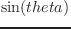
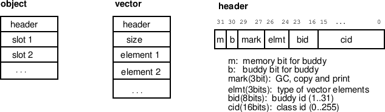
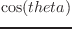

以下の関数の引数は、すべてintegerとする。
mod dividend divisor [関数]
-
-
dividend を divisorで割った余りを返す。
(mod 6 5)=1, (mod -6 5)=-1, (mod 6 -5)=1, (mod -6 -5)=-1.
1- integer [関数]
-
-
を返す。コンパイラでは、引数を integer と仮定する。
1+ integer [関数]
-
-
 を返す。
1+ と 1 の引数は、integer でなければならない。
logand &rest integers [関数]
-
- integersのビット単位ＡＮＤ。
logior &rest integers [関数]
-
- integersのビット単位ＯＲ。
logxor &rest integers [関数]
-
- integersのビット単位ＸＯＲ。
logeqv &rest integers [関数]
-
-
logeqvは(lognot (logxor ...))と同等である。
lognand &rest integers [関数]
-
- integersのビット単位ＮＡＮＤ。
lognor &rest integers [関数]
-
- integersのビット単位ＮＯＲ。
lognot integer [関数]
-
- integerのビット反転。
logtest integer1 integer2 [関数]
-
-
(logand integer1 integer2)がゼロでないとき T を返す。
logbitp index integer [関数]
-
-
integerがNILでなければ、LSBから数えて index番目の
ビットが 1 のとき T を返す。
ash integer count [関数]
-
-
数値演算左シフト。
もし count が正のとき、integerを左にシフトする。
もし count が負のとき、
integer を count ビット右にシフトする。
ldb target position width [関数]
-
-
LoaD Byte.
ldb や dpb のByte型は、 EusLispにないため、代りに
2個の integer を使用する。
target のLSBよりposition番目の位置からMSBへ width ビットの
範囲を抜き出す。例えば、 (ldb #x1234 4 4) は 3となる。
dpb value target position width [関数]
-
-
DePosit Byte.
targetのLSBよりposition番目の位置へvalueを
widthビット置き換える。
2016-03-23